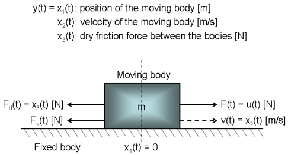
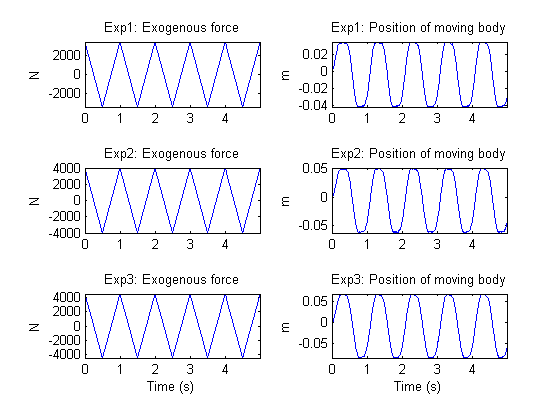
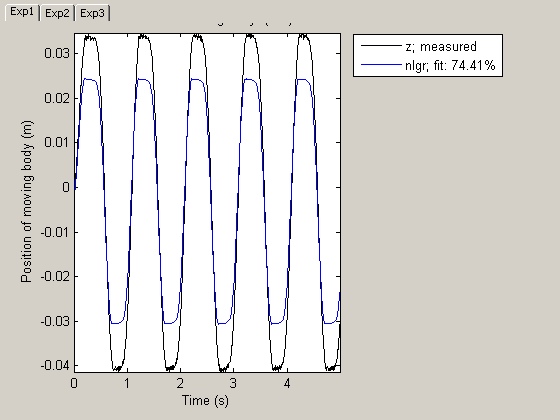
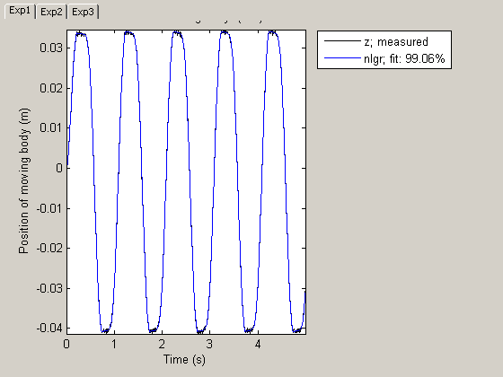

Dry Friction Between Two Bodies: Parameter Estimation Using Multiple Experiment Data
This tutorial illustrates IDNLGREY modeling based on multiple experiment data. A system exhibiting dry friction between two solid bodies will be used as the basis for the discussion. In this system, one body is fixed, while the other body moves forward and backward over the fixed body due to an exogenous force according to Figure 1.

Figure 1: Schematic view of a two body system.
Contents
Modeling Dry Friction Between Two Bodies
Using Newton's third law of motion, the movement of the moving body is described by:
F_tot(t) = m*a(t) = m*d/dt v(t) = m*d^2/dt^2 s(t)
where F_tot(t) equals the exogenous force F(t) minus the friction force caused by the contact between the two bodies. The friction force is assumed to be the sum of a sliding friction force F_s(t) and a dry friction force F_d(t). The former is normally modeled as a linear function of the velocity, i.e., F_s(t) = k*v(t), where k is an unknown sliding friction parameter. Dry friction, on the other hand, is a rather complex phenomenon. In the paper:
A. Clavel, M. Sorine and Q. Zhang. "Modeling and identification of a leaf spring system". In third IFAC Workshop on Advances in Automotive Control, 2001.
it is modeled by an ordinary differential equation:
d/dt F_d(t) = -1/e*|v(t)|*F_d(t) + f/e*v(t)
where e and f are two unknown parameters with dimensions distance and force, respectively.
Denoting the input signal u(t) = F(t) [N], introducing states as:
x1(t) = s(t) Position of the moving body [m]. x2(t) = v(t) Velocity of the moving body [m/s]. x3(t) = F_d(t) Dry friction force between the bodies [N].
and model parameters as:
m Mass of the moving body [m]. k Sliding friction force coefficient [kg/s]. e Distance-related dry friction parameter [m]. f Force-related dry friction parameter [N].
we arrive at the following state space model structure:
d/dt x1(t) = x2(t) d/dt x2(t) = 1/m*(u(t) - k*x2(t) - x3(t)) d/dt x3(t) = 1/e*(-|x2(t)|*x3(t) + f*x2(t))
y(t) = x1(t)
These equations are entered into a C-MEX model file, twobodies_c.c. Its state and output update equations, compute_dx and compute_y, are as follows:
/* State equations. */
void compute_dx(double *dx, double t, double *x, double *u, double **p,
const mxArray *auxvar)
{
/* Retrieve model parameters. */
double *m, *k, *e, *f;
m = p[0]; /* Mass of the moving body. */
k = p[1]; /* Sliding friction force coefficient. */
e = p[2]; /* Distance-related dry friction parameter. */
f = p[3]; /* Force-related dry friction parameter. */ /* x[0]: Position. */
/* x[1]: Velocity. */
/* x[2]: Dry friction force. */
dx[0] = x[1];
dx[1] = (u[0]-k[0]*x[1]-x[2])/m[0];
dx[2] = (-fabs(x[1])*x[2]+f[0]*x[1])/e[0];
} /* Output equation. */
void compute_y(double *y, double t, double *x, double *u, double **p,
const mxArray *auxvar)
{
/* y[0]: Position. */
y[0] = x[0];
}Having written the file describing the model structure, the next step is to create an IDNLGREY object reflecting the modeling situation. We also add information about the names and units of the inputs, outputs, states and model parameters of the model structure. Notice that the Parameters and InitialStates are here specified as vectors, which by default means that all model parameters and no initial state vector will be estimated when PEM is called.
FileName = 'twobodies_c'; % File describing the model structure. Order = [1 1 3]; % Model orders [ny nu nx]. Parameters = [380; 2200; 0.00012; 1900]; % Initial parameter vector. InitialStates = [0; 0; 0]; % Initial states. Ts = 0; % Time-continuous system. nlgr = idnlgrey(FileName, Order, Parameters, InitialStates, Ts, ... 'Name', 'Two body system', ... 'InputName', 'Exogenous force', ... 'InputUnit', 'N', ... 'OutputName', 'Position of moving body', ... 'OutputUnit', 'm', ... 'TimeUnit', 's'); setinit(nlgr, 'Name', {'Position of moving body' ... 'Velocity of moving body' ... 'Dry friction force between the bodies'}); setinit(nlgr, 'Unit', {'m' 'm/s' 'N'}); setpar(nlgr, 'Name', {'Mass of the moving body' ... 'Sliding friction force coefficient', ... 'Distance-related dry friction parameter' ... 'Force-related dry friction parameter'}); setpar(nlgr, 'Unit', {'m' 'kg/s' 'm' 'N'});
Input-Output Data
At this point, we load the available (simulated) input-output data. The file contains data from three different (simulated) test runs each holding 1000 noise-corrupted input-output samples generated using a sampling rate (Ts) of 0.005 seconds. The input u(t) is the exogenous force [N] acting upon the moving body. In the experiments, the input was a symmetric saw-tooth formed signal, where the waveform repetition frequency was the same for all experiments, but where the maximum signal amplitude varied between the test runs. The output y(t) is the position [m] of the moving body (relative to the fixed one). For our modeling purposes, we create one IDDATA object holding three different experiments:
load(fullfile(matlabroot, 'toolbox', 'ident', 'iddemos', 'data', 'twobodiesdata')); z = merge(iddata(y1, u1, 0.005), iddata(y2, u2, 0.005), iddata(y3, u3, 0.005)); z.Name = 'Two body system'; z.InputName = nlgr.InputName; z.InputUnit = nlgr.InputUnit; z.OutputName = nlgr.OutputName; z.OutputUnit = nlgr.OutputUnit; z.Tstart = 0; z.TimeUnit = nlgr.TimeUnit;
The input-output data used for the onward identification experiments are shown in a plot window.
figure('Name', [z.Name ': input-output data']); for i = 1:z.Ne zi = getexp(z, i); subplot(z.Ne, 2, 2*i-1); % Input. plot(zi(:, [], 1)); title([z.ExperimentName{i} ': ' zi.InputName{1}]); if (i < z.Ne) xlabel(''); else xlabel([z.Domain ' (' zi.TimeUnit ')']); end axis('tight'); subplot(z.Ne, 2, 2*i); % Output. plot(zi(:, 1, [])); title([z.ExperimentName{i} ': ' zi.OutputName{1}]); if (i < z.Ne) xlabel(''); else xlabel([z.Domain ' (' zi.TimeUnit ')']); end axis('tight'); end
Figure 2: Input-output data from a two body system.
Performance of the Initial Two Body Model
Before estimating the four unknown parameters we simulate the system using the initial parameter values. We use the default differential equation solver (ode45) with the default solver options. When called with only two input arguments, COMPARE will estimate the full initial state vectors, in this case one per experiment, i.e., 3 experiments each with a 3-by-1 state vector implies 9 estimated initial states in total. The simulated and true outputs are shown in a plot window, and as can be seen the fit is decent but not as good as desired. (The outputs of an experiment are typically displayed under a "TAB". In this case there are three experiments and hence three "TABS", named Exp1, Exp2 and Exp3. In published demos, only the output(s) of the first experiment is displayed. Clicking on a "TAB" leads to that the experiment data associated with the "TAB" is displayed.)
figure; compare(z, nlgr);
Figure 3: Comparison between true outputs and the simulated outputs of the initial two body model.
Parameter Estimation
In order to improve the fit, the four parameters are next estimated. We use data from the first and last experiments in the estimation phase and keep the data from the second experiment for pure validation purposes.
nlgr = pem(getexp(z, [1 3]), nlgr, 'Display', 'Full');
Criterion: Trace minimization
Scheme: Trust-Region Reflective Newton (LSQNONLIN, LargeScale = 'On')
--------------------------------------------------------------
Norm of First-order
Iteration Cost step optimality
--------------------------------------------------------------
0 9.19335e-005 - -
1 8.55109e-005 10 72.1
2 7.43184e-005 20 68.4
3 5.23253e-005 40 50.8
4 2.30174e-005 80 18.7
5 3.23926e-007 143 13.7
6 2.24853e-007 11.1 1.43
7 2.24076e-007 4.07 0.153
--------------------------------------------------------------
Performance of the Estimated Two Body Model
In order to investigate the performance of the estimated model, a simulation of it is finally performed. By tailoring the initial state structure array of nlgr it is possible to fully specify which states to estimate per experiment in, e.g., COMPARE. Let us here define and use a structure where initial states x1(0) and x2(0) are estimated for experiment 1, x2(0) for experiment 2, and x3(0) for experiment 3. With this modification, a comparison between measured and model outputs is shown in a plot window.
nlgr.InitialStates = struct('Name', getinit(nlgr, 'Name'), ... 'Unit', getinit(nlgr, 'Unit'), ... 'Value' , zeros(1, 3), 'Minimum', -Inf(1, 3), ... 'Maximum', Inf(1, 3), 'Fixed', ... {[false false true]; [true false true]; [true true false]}); figure; compare(z, nlgr, 'init', 'model');
Figure 4: Comparison between true outputs and the simulated outputs of the estimated two body model.
Of special interest is the result with data from the second experiment, which were not used for the parameter estimation. The dynamics of the true system is clearly modeled quite well for all experiments. The estimated parameters are also rather close to the ones used to generate the experimental data:
disp(' True Estimated parameter vector'); ptrue = [400; 2e3; 0.0001; 1700]; fprintf(' %10.5f %10.5f\n', [ptrue'; getpvec(nlgr)']);
True Estimated parameter vector
400.00000 399.91422
2000.00000 2002.15650
0.00010 0.00010
1700.00000 1699.37636
By finally using the PRESENT command, we can get additional information about the estimated model:
present(nlgr);
Time-continuous nonlinear state-space model defined by 'twobodies_c' (MEX-file):
dx/dt = F(t, u(t), x(t), p1, ..., p4)
y(t) = H(t, u(t), x(t), p1, ..., p4) + e(t)
with 1 input, 3 states, 1 output, and 4 free parameters (out of 4).
Input:
u(1) Exogenous force(t) [N]
States: initial value
x(1) Position of moving body(t) [m] xinit@exp1 0 (est) in [-Inf, Inf]
xinit@exp2 0 (est) in [-Inf, Inf]
xinit@exp3 0 (fix) in [-Inf, Inf]
x(2) Velocity of moving body(t) [m/s] xinit@exp1 0 (fix) in [-Inf, Inf]
xinit@exp2 0 (est) in [-Inf, Inf]
xinit@exp3 0 (fix) in [-Inf, Inf]
x(3) Dry friction force between the bodies(t) [N] xinit@exp1 0 (fix) in [-Inf, Inf]
xinit@exp2 0 (fix) in [-Inf, Inf]
xinit@exp3 0 (est) in [-Inf, Inf]
Output:
y(1) Position of moving body(t) [m]
Parameters: value standard dev
p1 Mass of the moving body [m] 399.914 661.277 (est) in [-Inf, Inf]
p2 Sliding friction force coefficient [kg/s] 2002.16 5640.97 (est) in [-Inf, Inf]
p3 Distance-related dry friction parameter [m] 9.97295e-005 0.000835731 (est) in [-Inf, Inf]
p4 Force-related dry friction parameter [N] 1699.38 2116.46 (est) in [-Inf, Inf]
The model was originally estimated and then modified.
Created: 29-Jun-2010 23:42:56
Last modified: 29-Jun-2010 23:43:24
Conclusions
This demo has set forth how to use multiple experiment data when performing IDNLGREY modeling. Any number of experiments can be employed, and for each such experiment it is possible to fully specify which initial state or states to estimate in PEM, COMPARE, PREDICT, and so on.
Additional Information
For more information on identification of dynamic systems with System Identification Toolbox™ visit the System Identification Toolbox product information page.